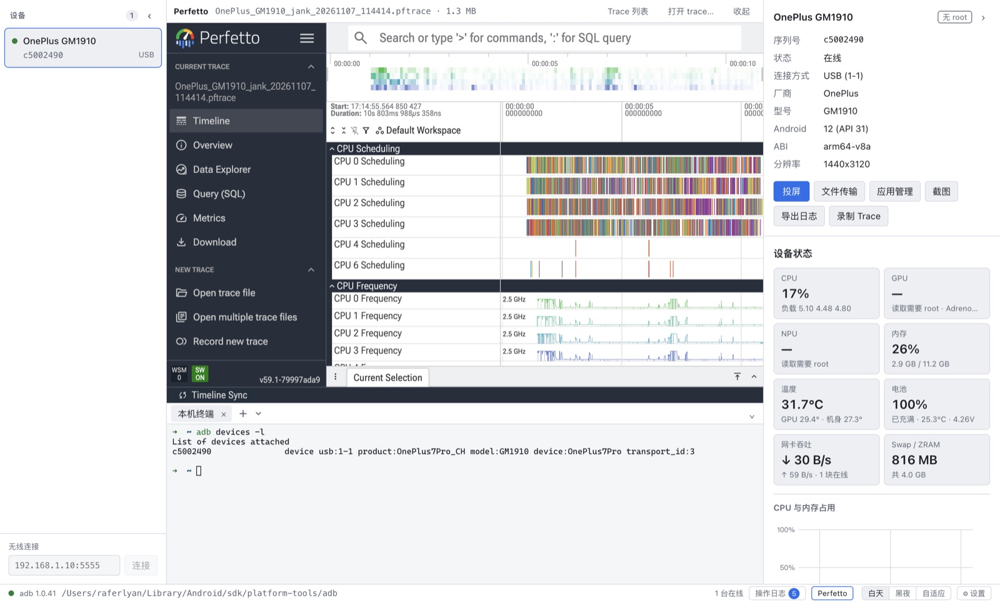
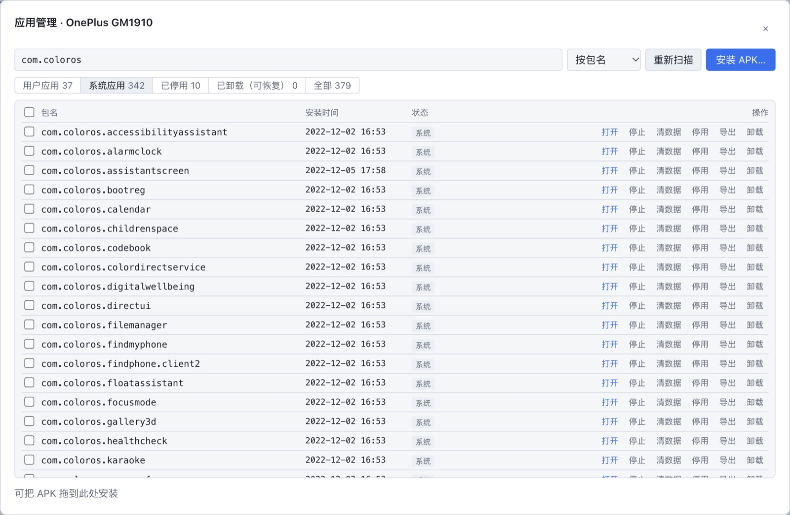
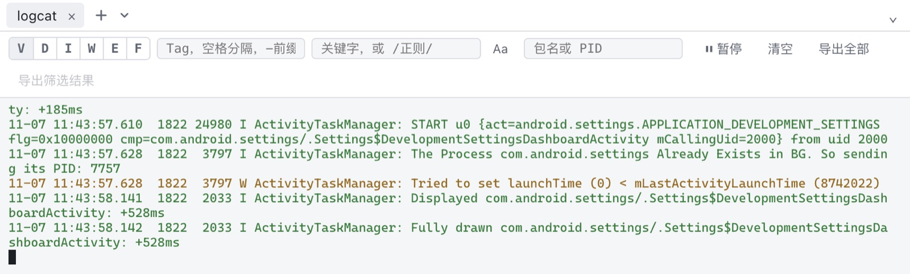
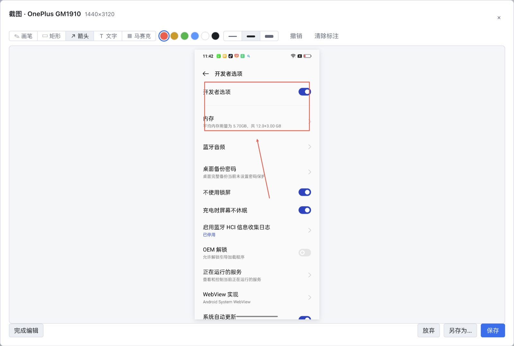

投屏负载条与应用指标
投屏负载条显示 CPU、内存、温度和前台应用帧率。状态面板可查看卡顿帧占比、帧耗时分布和关注应用的 CPU、内存、线程变化。
v0.2.0 → v0.9.2 · 2026.11.02–11.17
本期新增内嵌 Perfetto、应用管理、实时性能监控与回看、投屏录屏和多设备独立工作区。



投屏负载条显示 CPU、内存、温度和前台应用帧率。状态面板可查看卡顿帧占比、帧耗时分布和关注应用的 CPU、内存、线程变化。
曲线标记投屏交互、应用切换、卡顿、崩溃和 ANR 等事件。支持跳转到事件附近、拖选放大区间和配置阈值告警。
新增 GPU/NPU 占用、IO 等待、资源压力及温控、限频信息。设备状态面板可弹出为独立窗口。
帧统计以及 GPU、NPU、温控等指标的可用性取决于设备、系统版本和驱动。

默认单台模式下，切换设备就切换到该设备的投屏或状态页，以及该设备的 Shell 和 Logcat 标签。上一台的投屏和终端继续在后台运行，切回可接着操作。需要并排看画面时，可切换到网格模式。